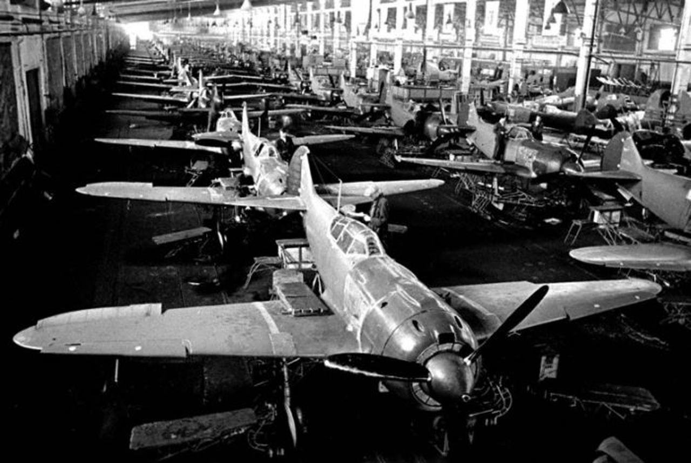

Бомбардировка Горького
Бомбардировка началась в 01:40 4 ноября 1941 года: три мощных взрыва сотрясли завод «ГАЗ». Начальство завода бросилось к телефонам, чтобы скорее сообщить о бомбежке. Сам «ГАЗ» в тот момент был похож на потревоженный муравейник.
В 16:40 того же дня произошла бомбардировка завода «Двигатель революции». От мощнейшего взрыва все рабочие, находившиеся в цехах, повалились на пол. После выполненного задания бомбардировщик полетел в центр города, где сделал «круг почета» над Кремлем и скрылся.
После первых бомбардировок были приняты срочные меры по переброске в Автозаводский район дополнительных зенитных орудий и боеприпасов, модифицировали связь и систему управления огнем.
Следующие массированные налеты состоялись в феврале 1942 года. В результате бомбардировок было убито 20 и ранено 48 человек. Промышленные объекты понесли незначительный урон. Затем бомбовые налеты немцы совершали в июне. В тот период враги начали атаковать и другие города Поволжья. Войска ПВО (Противовоздушная оборона. — прим. ред.) значительно укреплялись. Для обороны мостов, судов и пристаней выделили канонерские лодки Волжской флотилии. Стали активно применять аэростаты воздушного заграждения.
В июне 1943 года, после продолжительного затишья, Горький, особенно Автозаводский район, подвергся серии массированных ночных налетов немецкой авиации. Атаки врага вновь обрушились на «ГАЗ».
Бомбардировщики прилетали ежедневно, партиями по 150-200 самолетов, начиная с 00.00 и до 3 часов ночи. Перед бомбардировками немцы сбрасывали осветительные приборы. Было светло как днём. Горел завод, цеха, строения. Там и тут рвались бомбы. Главный грузовой конвейер разрушили до основания.
Но люди, голодные, обессиленные, плохо одетые, сотворили чудо — в течение одного месяца все восстановили. Ремонтные работы начались уже во время бомбежек и продолжались в нарастающем темпе.
Официальной датой восстановления Горьковского автозавода считается 28 октября 1943 года — в этот день И. В. Сталину был отправлен рапорт о восстановлении завода, который подписали 27 тысяч строителей.
Все для фронта
Завод «Красное Сормово» — один из старейших судостроительных предприятий, основан еще в середине XIX века. В годы Великой Отечественной войны основной продукцией стали танки Т-34 и подводные лодки. Последние город Горький собрал для фронта в количестве 23 штук.За три месяца производство перешло на выпуск танков.
Большой вклад не только в дело победы, но и в развитие артиллерии, внес выдающийся советский конструктор Василий Грабин, который прибыл в Горький в 1933 году.Под руководством мастера был разработан метод скоростного проектирования — появилась возможность создавать новые пушки в течение всего нескольких месяцев и даже недель. Все это позволяло в кратчайшие сроки ставить пушки на валовое производство с небывалой экономией металла, энергии и трудозатрат.
Первым делом самолеты
Завод им. Орджоникидзе (ныне завод «Сокол») внес существенный вклад в развитие военной авиации.Чтобы обеспечить нужды советской военной авиации, предприятие перешло на круглосуточный режим работы. При этом смены длились по 12–14 часов, а некоторые рабочие целыми днями не выходили с предприятия

В конце 1941 года доля Горьковского авиационного завода в производстве истребителей составила 34–38%, а темп выпуска достигал 24 самолетов в сутки. Нижний внес гигантский вклад в победу, что по сей день отражается в слезах и улыбках, которые появляются на лицах людей в День Победы. Он — в пламени Вечного огня, что горит перед Кремлевским концертным залом Нижегородской филармонии, на волжской круче, откуда просматриваются бескрайние русские дали.
Слова Вет
Во время перерыва между заседаниями мы вышли на улицу и к своему ужасу увидели черный самолет со свастикой, описывающий круг над Кремлем. При этом летчик высунулся из кабины и даже помахал нам рукой! После этого мы вернулись в здание и нам сообщили — только что разбомбили завод им. Ленина, его директор Кузьмин погиб…
5 июня… В 00 час. по радио завыла сирена воздушной тревоги… Послышался нарастающий свист бомб и грохот разрывов… Столбы пламени под грохот взрывов поднялись и в других частях Автозавода. Сразу целая огненная стена выросла над Автозаводом, таких налетов еще не было. Немцы неистово бомбили по образовавшимся огненным ориентирам, одновременно круша шоссейные дороги вокруг завода и поселков…